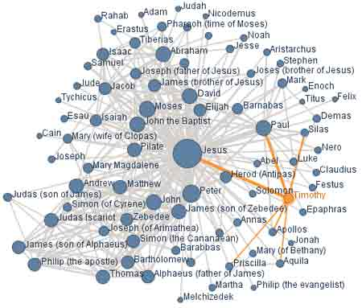

Rien que pour le plaisir
Grâce à barrablog, je viens de découvrir le réseau social entre les personnages du Nouveau Testament. Cette cartographie animée est proposée par le un superbe service de partage de connaissances et de visualisation créé par IBM.
